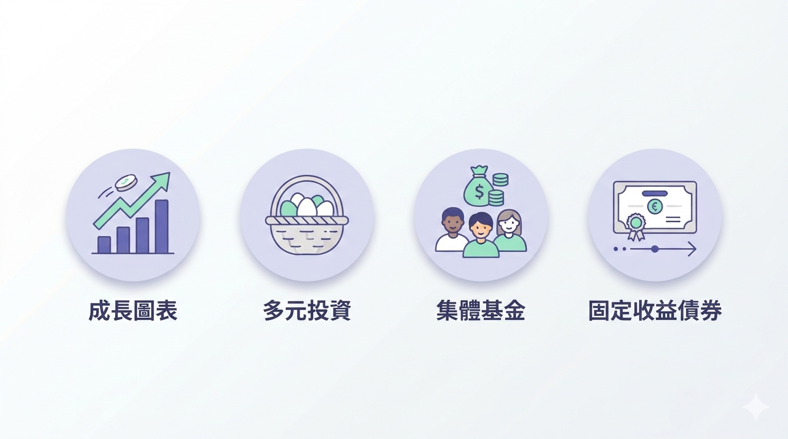
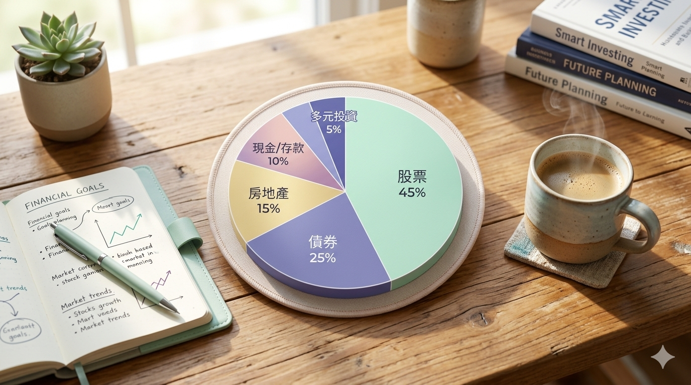
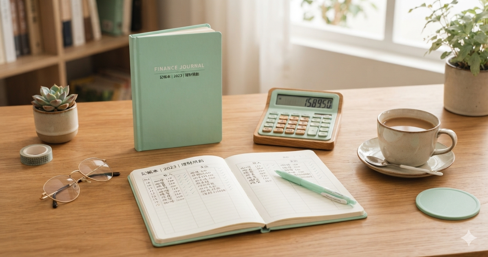

投資理財
【投資理財修煉·進階篇】認識投資工具：股票、ETF、基金、債券全景
2026-09-20
股票、ETF、基金、債券到底差在哪？這篇用白話帶你認識四種最常見的投資工具：各自怎麼運作、風險報酬如何、適合什麼樣的人，幫你在開始投資前先看懂全景。
🎬
投資理財
【投資理財修煉·入門篇】讀《富爸爸窮爸爸》：改變我金錢觀的一本書
2026-09-19
《富爸爸窮爸爸》是很多人理財路上的啟蒙書。這篇分享我的讀後心得與啟發：資產與負債的真正差別、為什麼要讓錢為你工作，以及它如何改變我看待金錢的方式。
投資理財
【投資理財修煉·入門篇】投資心態：長期 vs 短期、耐心 vs 貪婪
2026-09-19
投資最難的往往不是技術，而是心態。這篇談長期思維與短線衝動的差別、恐懼與貪婪如何影響決策，以及怎麼建立能讓你走得久的投資心理素質。

投資理財
【投資理財修煉·入門篇】理財基本概念：資產配置與風險管理
2026-09-18
投資的第一步不是選股，而是搞懂資產配置與風險管理。這篇用最白話的方式，帶你建立投資的地基：錢該怎麼分、風險怎麼控，讓你走得穩又走得遠。
生活
待辦事項總是做不完？用任務管理把生活理清楚
2026-09-17
腦袋裡塞滿待辦、事情老是漏東漏西？別再靠記憶硬撐。這篇分享一套簡單的任務管理方法，把生活瑣事全部倒出來、分好類、逐一完成，讓你過得更輕鬆。
旅遊
仙台 3 天 2 夜：銀山溫泉、松島、環市巴士一次玩透
2026-09-17
第一次玩仙台怎麼排？三天兩夜路線一次給你：Day1 走進大正浪漫的銀山溫泉，Day2 遊日本三景松島，Day3 用 Loople 環市巴士輕鬆逛市區。含交通、時間與省錢小撇步。

投資理財
【投資理財修煉·入門篇】理財第一步：先搞懂錢跑去哪了
2026-09-17
想開始理財卻不知從何下手？別急著投資，先從記帳搞懂自己的收支開始。本文用最白話的方式，帶你踏出理財的第一步。